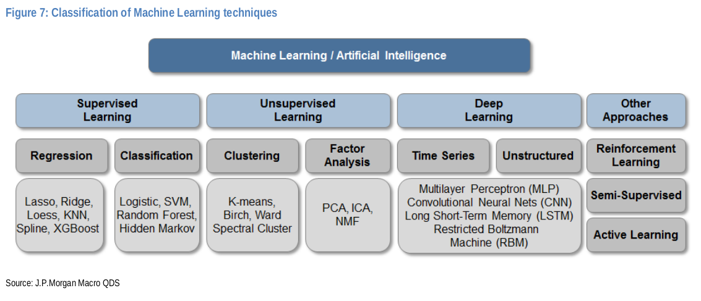
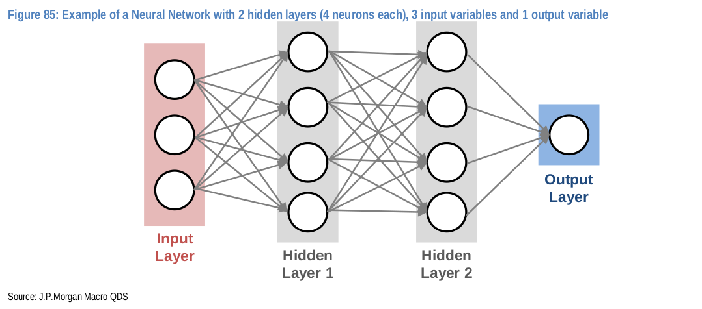
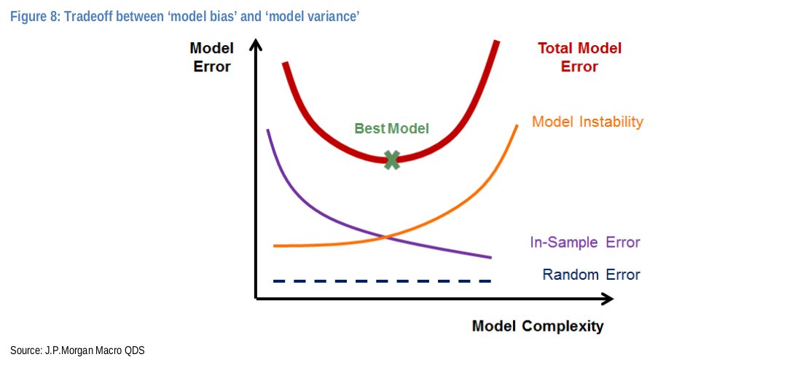
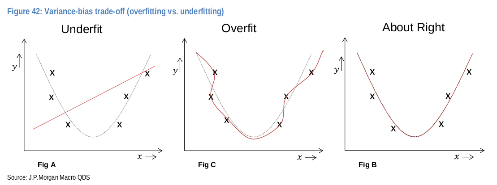
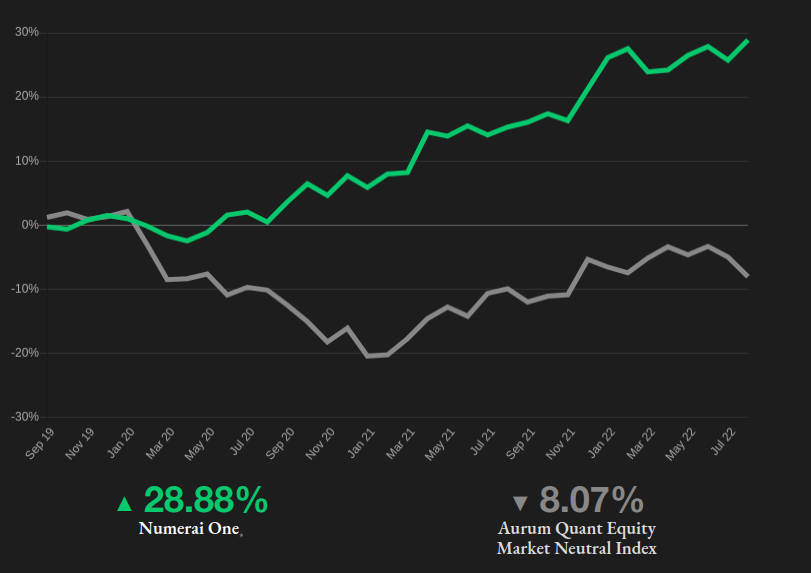
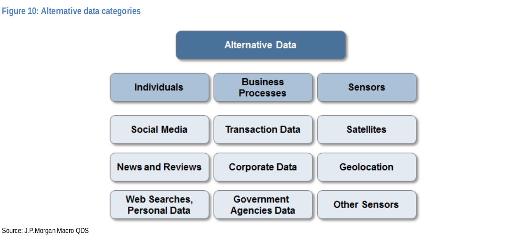
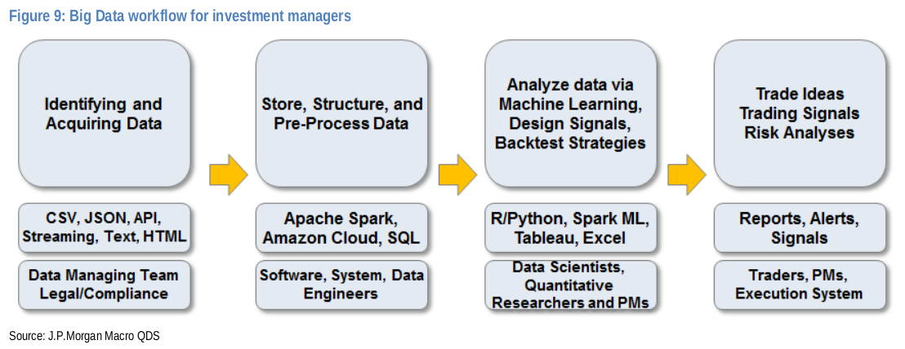
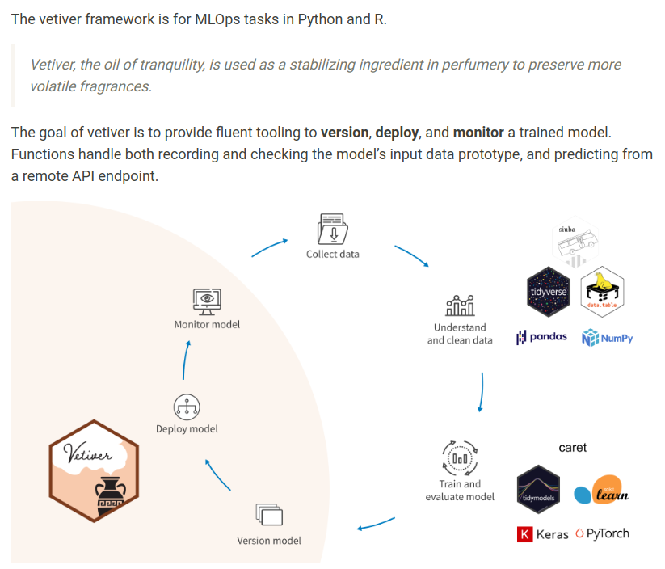
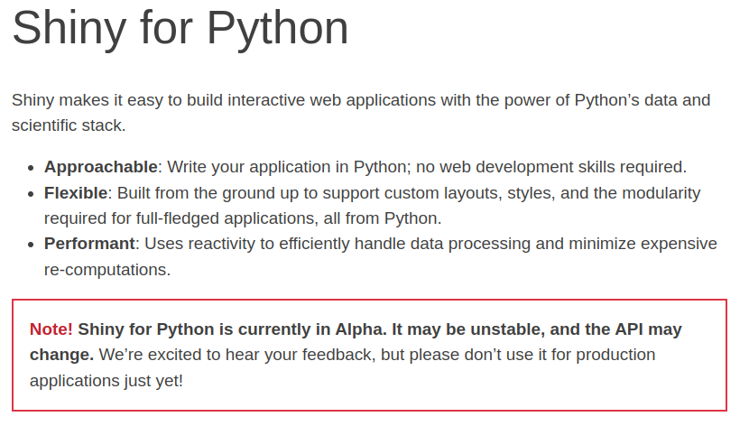

3 Predictions with Data
3.1 What is Machine Learning?
An ML algorithm learns complex patterns in high-dimensional space with out being specifically directed.
- may find patterns that can’t be easily represented by a finite set of equations
- often involves a large number of variables and interactions between them
- researchers do not assume a particular structure of the data
3.2 Categories of Machine Learning
- Supervised - learning to make predictions from a set of feature and label observations.
- Unsupervised - learning patterns in a set of feature observations.
- Deep Learning - a subset of supervised learning consisting of multi-layered neural networks.
- Reinforcement Learning - how intelligent agents ought to take action to maximize a reward.
Classical Machine Learning: supervised and unsupervised
Deep Learning: neural networks and reinforcement learning
3.3 Regression and Classification
- There are two categories of supervised learning.
- Predicting a quantitative (continuous) label is called regression.
- Predicting a qualitative (discrete) label is called classification.
- Certain prediction methods are better suited for regression or classification. Other methods work equally well for both.
3.4 Machine Learning Techniques

3.5 Neural Networks and Their Applications
- Feed-Forward: non-linear function estimation
- Convolutional: image classification
- Recurrent: time-series analysis
Deep-learning has many stunning success stories outside of finance (chat-bots, language translation, self-driving cars), but classical machine learning still dominates structured data.
3.6 Feed-Forward Neural Network

3.7 Universal Approximation Theorem
A feed-forward neural network with a single hidden layer can approximate almost any function with arbitrary accuracy.
However you may need a lot of units in the hidden layer.
From a practical standpoint, you’re probably better off with multiple layers of modest size.
3.8 Variance-Bias Trade-Off (1 of 3)
\[\begin{align*} \text{Forecast Error} \,\, = \,\, &\text{In-Sample Error} \, + \\[6pt] &\text{Model Instability} \, + \\[6pt] &\text{Random Error} \end{align*}\]
In-Sample Error: bias
Model Instability: variance
Random Error: irreducible noise
3.9 Variance-Bias Trade-Off (2 of 3)
- Bias – if the model poorly fits historical data, it will likely poorly describe future data.
- Variance – if the model fits historical data too well, it has likely fit noise, and hence it will likely poorly describe future data.
The art of machine learning is finding the right balance between bias and model stability.
3.10 Variance-Bias Trade-Off (3 of 3)

Model flexibility comes at the cost of model instability.
3.11 Overfitting and Underfitting

3.12 Machine Learning vs Statistics (1 of 2)
Many of the ideas of machine learning have lived under the umbrella of statistics.
Substantive differences:
- Nature of models:
- statistics: small linear models
- ML: large non-linear models
- Model selection: searching through many models to find the best performers; i.e. model tuning.
- regularization to prevent overfitting
3.13 Machine Learning vs Statistics (2 of 2)
Substantive differences (cont’d):
- Novel optimization techniques.
- e.g stochastic gradient descent for large data sets
- A wide applicability to commercial contexts due to a focus on prediction accuracy.
3.14 Machine Learning Tools and Technology
- Programming: Python, R, Julia, Scala
- Packages: sklearn, tidymodels, keras, tensorflow, Spark MLlib
- Distributed Computing: Spark
- Visualization: Shiny, Tableau, PowerBI, Looker
- Legacy: Excel, Matlab, SAS
4 Financial Machine Learning
4.1 Non-Financial ML
- Applications of ML in non-financial context have seen some stunning success:
- image recognition
- strategy games
- autonomous vehicles
- robotics
- All of these contexts have two characteristics:
- high signal to noise ratio
- truly BIG data
4.2 The Promise of Financial ML
Financial ML offers the ability to extract insights from data:
- non-linear relationships in high dimensional feature space
- handling complex interactions
- focus on prediction
- controlling for overfitting
Warning: financial modeling is harder than driving cars or recognizing faces!
4.3 Financial ML Applications
- price/return prediction
- hedging
- portfolio construction
- bet sizing
- credit ratings
- trade execution
4.4 Evolution not Revolution
…machine learning is the most recent embodiment of the long standing quantitative investing paradigm - the idea of using data-driven approaches to build more efficient portfolios…it is a natural evolution of quantitative tools in asset management, and not a revolutionary shift in the business model.
Can Machines “Learn” Finance
4.5 Financial ML vs Non-Financial ML
- Financial ML is markedly different than many of the domains in which ML has been wildly successful.
- small data
- very noisy
- can’t generate new data via experimentation
- Complex models like neural networks can have literally millions of parameters to fit, and hence require a huge amount of data.
Warning: returns prediction is harder than chess, go, and Atari.
4.6 Dogs Morphing into Cats
- Markets evolve.
- In particular, if there is a model that is predictive of returns, then other market participant become aware of the model.
- And hence the predictive power of the model goes away.
Image recognition analogy: “…dogs morph into cats as soon as the model gets good at predicting dogs.”
4.7 Returns Prediction: Small Data
- Return prediction is an inherently small data problem.
- HFT has had more ML success because of larger data sets.
- however rebalance frequencies are capped by transaction costs
- Tiny: monthly macro statistics (few hundred)
- Smallish: monthly cross-sectional equities data (few hundred thousand)
- amount of data is over stated due to correlations
4.8 Return Prediction: Low Signal-to-Noise
High volatility due to unanticipated news.
Volatility is especially high relative to risk-premia which are small.
Any return predictability is wiped away by trading, and all that remains is noise.
4.9 Interpretability (Black-Box)
Machine learning models can be hard to interpret, i.e. describe how an input observation results in a prediction.
Antidotes:
- Shapley numbers
- mean decrease accuracy
Choosing predictability vs interpretability of a model is ultimately a business decision.
4.10 Pitfalls of Financial Machine Learning
- data sets that don’t contain edge
- signals that have little investing capacity
- signals that decay quickly
- data sets that cost too much
- building expensive infrastructure with little ROI
- data scientists without financial knowledge
- overfitting
4.11 Deep Learning in Portfolio Management
The use of deep learning in asset management tends to be indirect:
- analysis of parking lots images (convolutional)
- analysis of crop images (convolutional)
- text analysis for sentiment (recurrent)
4.12 Well Known ML Firms
- Renaissance Technology
- Two Sigma
- DE Shaw
- TGS
- Capital Fund Management
4.13 Numerai
- crowd sourced hedge fund
- founded by ex-RenTech executives
- trading decision based on a data-science tournament using anonymized data
- participant enter the tournament by “staking” Numeraire, a bespoke crypto-currency

5 Big Data
5.1 Big Data Revolution - Root Causes
- A huge increase in the amount of available data:
- order-book
- social media
- phones
- IOT
- Increase in cheap computing and digital storage.
- Advances in machine learning techniques.
- Proliferation of open sources tooling, e.g. Python and R.
5.2 Programmatic APIs
Data providers like Refinitiv and Bloomberg have programmatic APIs have caused an explosion in data-driven finance:
- structured historical (EOD prices)
- structured streaming (real time fills and order-book)
- unstructured historical (articles)
- unstructured streaming (real time NLP of commodity reports)
5.3 Improvements in Hardware
- Performance: GPUs and TPU have a parallel architecture
- Cost: have come down tremendously; now attainable to individual researchers
- Power: electricity usage has come down
- Cloud Computing: AWS, GCP, Azure
- Open Source Technologies: Python, R, Spark
5.4 Categories of Alternative Data
It is useful to categorize alternative data by how it is generated:
- people: social media, product reviews, search trends
- business processes: company exhaust data, commercial transactions, credit card data
- sensors: satellite images, foot and car traffic, ship locations
Characteristics:
- high volume
- high velocity
- variety - formats, structured, unstructured
5.5 Alternative Data Categories

5.6 Big Data Workflow

5.7 How Processed Do You Want the Data?
- raw data
- semi-processed data
- signals and reports
6 ML vs Econometrics
6.1 Econometrics
- Encompasses the set of statistical methods applied to economic and financial data.
- The purpose is to test economics theories, not make predictions.
- inference vs prediction
- Concentration on multivariate linear regression.
Concepts central to machine learning are largely absent from econometric literature: classifier, clustering, neural networks, machine learning
- the situation is better in biostatistics and chemeometrics.
6.2 The Popularity of Regression (OLS)
- centuries old
- simplicity
- scalability
- flexibility (e.g. polynomial, LOESS)
- speed
- availability (R, SAS, Python)
6.3 Faulty Assumptions of Regression (OLS)
- linearity of labels to features
- independence of features
- zero mean homoskedastic residuals
- no auto-correlation of residuals
6.4 Correlation
Correlation is the foundation of econometrics.
Here are the problems with correlations:
- most useful for linear codependencies, but most in finance are non-linear
- most useful for multivariate normal distributions (finance is non-normal)
- extremely noisy
- sensitive to outliers
6.5 Boring Data Sets
Most interesting data sets can be tackled by machine learning but not econometrics.
- unstructured data – less that 20% of all data is structured
- high dimensionality – more features than observations
- noisy – lots noise/randomness per unit of signal
Econometrics models uninteresting data.
6.6 In-Sample vs Out-of-Sample
- In-sample variance adjudication is the goal of classical statistics/econometrics.
- Machine learning attempts to predict out-of-sample.
- this has more practical value
- Inference vs prediction.
6.7 High Expectations
- A typical econometric model will look like: \[\begin{align*} y_{t} = f(x_{1,t},\ldots, x_{p,t}) + \epsilon_{t} \end{align*}\] where \(f\) is some polynomial of the \(x_{i,t}\).
- This means that an econometrician needs to correctly identify \(f\) as well as the relevant \(x_{i}\).
- Given the complexity of financial systems, this is not realistic.
6.8 Parametric vs Learning
Traditional models don’t learn from the data.
Rather, we are required to provide the exact functional (parametric) specification in order to reach useful conclusions.
6.9 Limitations of \(p\)-Values
Feature importance in financial econometrics relies on \(p\)-values. However:
- require unrealistic assumptions to be valid
- e.g. white noise Gaussian residuals
- fail in the common case of multi-collinearity
- assess significance in-sample vs. out-of-sample
6.10 Mean Decrease Accuracy (MDA)
MDA is an ML technique for assessing feature importance that is more robust that \(p\)-values.
- fit a machine learning algorithm on the training set, estimate the out-of-sample accuracy
- shuffle one variable at a time and re-estimate the out-of-sample accuracy
- evaluate the decay in out-of-sample accuracy from shuffling each variable
6.11 Long-Range Forecasting
Using small amounts of structured data to make long-term forecasts.
- price time series data (stat arb, CTA)
- cross-sectional data (asset pricing, factor investing)
Forecasts rely on statistical relationships between lagged observation and future outcome.
- however these relationships don’t always hold
6.12 Short-Term Forecasting (Now-Casting)
Using a large amount of unstructured data to make short-term predictions:
- liquidity conditions based on millions of FIX messages
- earnings of retailer based on parking lot occupancy satellite images
- industrial production based on cargo shipments, auto production, electricity consumption
7 Machine Learning Operations (MLOps)
7.1 What is MLOps?
MLOps is a set of practices that aims to deploy and maintain machine learning models in production reliably and efficiently.
Wikipedia
7.2 From Prototype to Production (1 of 2)
Somewhere a quant has accomplished the following:
import pandas as pd
from sklearn.ensemble import RandomForestClassifier
X = pd.read_csv('features.csv')
y = pd.read_csv('labels.csv')
model = RandomForestClassifier()
model.fit(X, y)7.3 From Prototype to Production (2 of 2)
You probably want to:
- document the model
- model card
- make the model accessible to other processes
- via an API
- organize versions of the model as training data is updated
- track the performance of the model through time
7.4 Vetiver - Python and R
- open source packages developed by RStudio
- ideal for versioning, deploying, monitoring models
- works seemlessly with RStudio Connect, but can be used elsewhere

8 RStudio Updates
8.1 Rebrand

RStudio is becoming Posit!
8.2 Quarto: Next-Gen R Markdown
This presentation was created with Quarto in a Jupyter Notebook. No R!
8.3

Over a decade of Shiny development brought into the Python ecosystem.
9 Thank You
9.1 References
Advances in Financial Machine Learning, Marcos López de Prado (2018)
Artificial Intelligence in Finance, Yves Hilpsich (2020)
Big Data and AI Strategies, JP Morgan (2017)
Can Machines “Learn” Finance?, Ronen Israel, Bryan Kelly, Tobias Moskowitz (2020)